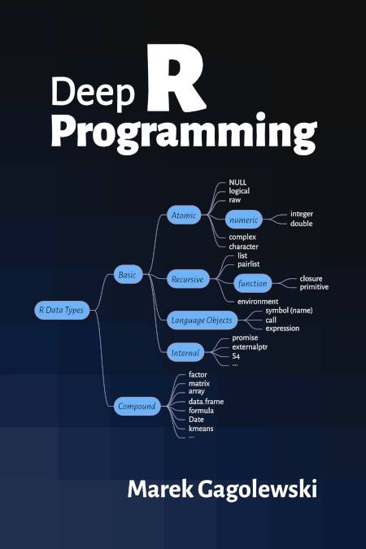

Deep R Programming#
Deep R Programming by Marek Gagolewski is a comprehensive course on one of the most popular languages in data science (statistical computing, graphics, machine learning, data wrangling and analytics). It introduces the base language in-depth. It is aimed at ambitious students, practitioners, and researchers who want to become independent users of this powerful environment.
Although available online, this is a whole course. It should be read from the beginning to the end. In particular, refer to the Preface for general introductory remarks.
This early draft is distributed in the hope that it will be useful.
For many students around the world, educational resources are hardly affordable. Therefore, I have decided that this book should remain an independent, non-profit, open-access project (available both in PDF and HTML forms). Whilst, for some people, the presence of a “designer tag” from a major publisher might still be a proxy for quality, it is my hope that this publication will prove useful to those seeking knowledge for knowledge’s sake.
Please spread the news about it by sharing the above URLs with your mates, peers, or students. Thank you.
Also, check out my other book, Minimalist data wrangling with Python [26].
Any bug/typo reports/fixes are appreciated: please submit them via this project’s GitHub repository.
Consider citing this book as: Gagolewski M. (2023), Deep R Programming, Zenodo, Melbourne, DOI: 10.5281/zenodo.7490464, ISBN: 978-0-6455719-2-9, URL: https://deepr.gagolewski.com/.
Copyright (C) 2022–2023 by Marek Gagolewski. Some rights reserved.
This material is licensed under the Creative Commons Attribution-NonCommercial-NoDerivatives 4.0 International License (CC BY-NC-ND 4.0).
Start here
Deep
Deeper
Deepest
Appendix